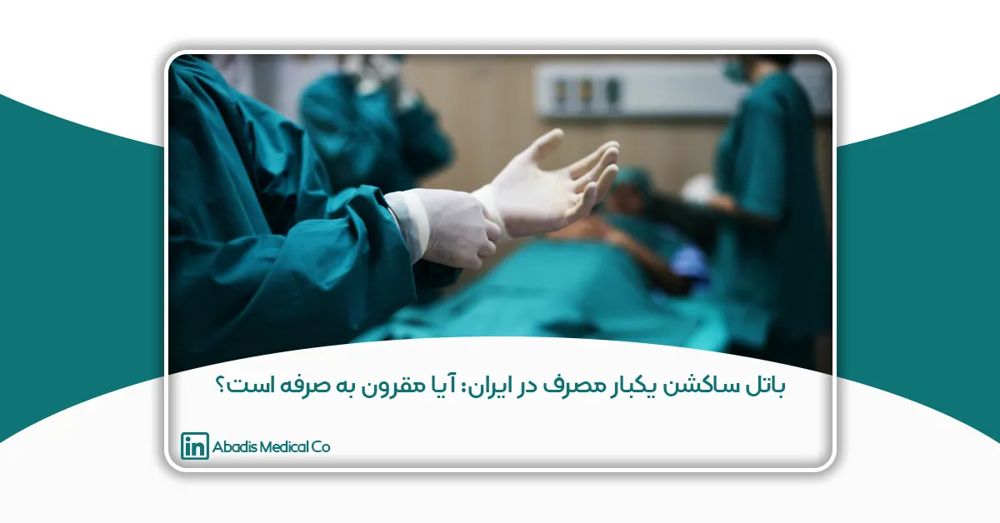

این مقاله توسط جناب آقای دکتر اسمعیل محمدنژاد نوشته شده و در نشریه پرستاری قلب و عروق، دوره یازدهم، شماره ۱، سال ۱۴۰۱ چاپ شده است.
خلاصه
هدف:
در این مقاله مروری، مقرون به صرفه بودن باتل ساکشن یکبار مصرف آبادیس در ایران مورد بحث و بررسی قرار گرفته است.
زمینه:
عفونت های مرتبط با مراقبت های بهداشتی باعث بروز مرگ و ناخوشی در بیماران، به ویژه در بخش مراقبت ویژه می شوند. روشها و دستورالعمل های مختلفی برای کنترل این عفونت ها وجود دارد که بخشی از این دستورالعمل ها درباره ساکشن و تجهیزات آن است.
روش کار:
جستجوی مقالات از طریق پایگاه های داده ای شامل Science Direct، PubMed، Cochrane، Medline، SID، Scopus، CINAHL، OVID، Iran Doc و Magiran با استفاده از کلید واژه های ”ساکشن یکبار مصرف“، ”عفونت بیمارستانی“، ”مدیریت پسماند“و معادل های انگلیسی آنها انجام شد. مقالاتی که در بازه زمانی 2000 تا 2022 میلادی منتشر شده بودند و با محوریت اصلی موضوع تحقیق ارتباط بیشتری داشتند، انتخاب شدند. معیارهای ورود مقالات شامل انتشار آنها در مجلات علمی معتبر، انتشار به زبان فارسی یا انگلیسی، امکان دسترسی به متن کامل مقاله بودند. معیارهای خروج از مطالعه شامل چاپ مقاله در مجلات ضعیف و نامعتبر بود.
یافته ها:
باتل ساکشن یکبار مصرف در پنج محور کنترل و پیشگیری عفونت بیمارستانی، مدیریت مصرف آب، سهولت در کاربرد، مدیریت پسماند، و بارمالی مورد ارزیابی قرار گرفت.
نتیجه گیری:
با توجه کمبود نیروی انسانی برای ضدعفونی باتل ساکشن های چندبار مصرف، هزینه محلول های ضدعفونی و استفاده نادرست در رقیق سازی آن، مدیریت پسماند فاضلاب های محلول های استفاده شده و تخلیه ساکشن ها، برای کشور ایران، استفاده از باتل ساکشن یکبار مصرف آبادیس نسبت به باتل ساکشن چندبار مصرف ارجح است.
کلیدواژه ها :ساکشن، عفونت بیمارستانی، باتل یکبار مصرف، مقرون به صرفه
مقدمه
عفونت های مرتبط با مراقبت های بهداشتی (HAIs) علت اصلی مرگ و ناتوانی قابل پیشگیری در بین بیماران بستری در بیمارستان است. با توجه به مراکز کنترل و پیشگیری از بیماری (CDC)، عوارض یا عفونت های ثانویه به کاشت دستگاه یا جراحی به عنوان HAI شناخته می شود. به طور خاص، CDC عفونت های محل جراحی، عفونت جریان خون مرتبط با خط مرکزی، عفونت های دستگاه ادراری مرتبط با کاتتر و پنومونی های مرتبط با ونتیلاتور را نظارت می کند (بوئو و کیس، .2017). وجود لوله تراشه شانس VAP را افزایش می دهد، زیرا مکانیسم های دفاعی طبیعی مجاری هوایی بیماران را کاهش می دهد. به عنوان مثال، کاهش رفلکس سرفه به میکروارگانیسم ها اجازه می دهد تا به دستگاه تنفسی تحتانی دسترسی پیدا کنند. استنشاق مداوم قطرات کوچک اوروفارنکس (Subglottic) مکانیسم اصلی VAP است(واترز و همکاران، 2018). پنومونی اولیه معمولاً به دلیل میکرواسپیراسیون کلونی های باکتریایی نازوفارنکس رخ می دهد، اما ارتباط ضعیفی بین پنومونی دیررس و میکروآسپیراسیون وجود دارد. برای کاهش آسپیراسیون مداوم ترشحات توسط کاف لوله تراشه در بیماران انتوبه شده، استفاده از ساکشن متناوب یا مداوم ترشحات اوروفارنکس پیشنهاد می شود (پاگوتو و همکاران، 2008؛ دزفولیان و همکاران، 2005). پنومونی بیمارستانی یک عارضه شایع در بیماران بستری در بخش مراقبت های ویژه (ICU) است. از ساکشن داخل تراشه در پاکسازی مجاری هوایی از ترشحات در بیماران تحت تهویه مکانیکی استفاده می شود. انجام دقیق ساکشن برای جلوگیری از پنومونی مرتبط با تهویه از اهمیت بالایی برخوردار است(علی پور و همکاران، 2016).
ساکشن داخل تراشه (ETS) یکی از رایجترین روشهای تهاجمی است که توسط پرستاران مراقبتهای ویژه (CCNs) برای حذف ترشحات ریوی انباشته شده، اطمینان از باز بودن راه هوایی برای تهویه و اکسیژنرسانی کافی و همچنین جلوگیری از آتلکتازی در بیماران انتوبه شده انجام میشود.ساکشن روشی جهت تمیز کردن ترشحات با استفاده از فشار منفی و یک سایز مناسب از کاتتر ساکشن است. این پروسیجر ممکن است توسط پرستاران و تیم درمانی در یک موقعیت اورژانسی انجام شود و یا قسمتی از فرایند مراقبت از بیمار باشد(دکسترو اسکات،2019). هدف از انجام ساکشن دهانی، حفظ رطوبت و سلامت دهان بیمار یا برداشتن خون و ترشحات استفراغی در یک موقعیت اورژانسی، خارج کردن ترشحات ریوی در بیمارانی است که قادر به سرفه موثر جهت خارج کردن ترشحات ریه نمیباشند. بیمار ممکن است کاملاً هوشیار یا دچار درجاتی از کاهش سطح هوشیاری باشد. با انجام ساکشن، ترشحات از راه هوایی این بیماران پاک شده و راههای هوایی جهت جلوگیری از آتلکتازی ثانویه به انسداد راههای هوایی، باز میشوند و اکسیژناسیون به صورت موثر و کافی انجام گیرد(شالک و همکاران،2011). عوارض انجام ساکشن شامل کاهش کمپلیانس ریه، آتلکتازی، هیپوکسی وهیپوکسمی، کاهش یا افزایش فشار خون، دیس ریتمی قلبی، ترومای بافتی به تراشه و لایه مخاطی برونش، انقباض واسپاسم برونش، افزایش کلونی میکروبی در راه هوایی تحتانی و تغییر در جریان مغز است که در صورت استفاده نادرست بسته به شرایط بیمار ایجاد می شود(وان دلور و همکاران،2003، ماجیور وهمکاران،2013). در برنامه ی ماژول بندی ده گانه در کنترل و پیشگیری از عفونت پنومونی در بخش مراقبت ویژه به نحوه پروسیجر ساکشن و نحوه نمونه گیری اشاره شد(ونشتیان و همکاران،2004).
نتیجه مطالعه ای نشان داد که بیش از نیمی (55٪) از CCN ها امتیاز نامطلوب را در مورد پایبندی خود به دستورالعمل های تمرین ETS کسب کردند در حالی که بقیه امتیازات متوسط (50-75٪) را کسب کردند، بدون اینکه هیچ یک از آنها پایبندی مطلوب-بالای 70 درصد-به دستورالعمل ها را نشان ندادند، آموزش و دریافت اطلاعات در مورد ETS به طور قابل توجهی عملکرد CCN ها را بهبود بخشید. نتیجه اکثر CCN ها در ICU بیمارستان ها هنگام انجام روش های ETS از دستورالعمل های تمرین مبتنی بر شواهد پیروی نمی کنند، که احتمالاً منجر به عوارض جانبی و عوارض متعدد برای بیماران می شود. CCN هایی که اطلاعات و آموزش دریافت می کنند، عملکرد بهتر ETS را نسبت به همتایان خود نشان می دهند، بنابراین ضروری است که برای بهبود عملکرد کارکنان پرستاری دستورالعملهای روشن، آموزش مستمر و نظارت ارائه شود(Alkubati et al., 2022).
طبق اخرین گزارش وزارت بهداشت از حدود 9 میلیون و ششصدهزار بیمار بستری شده در بیمارستان، حدود128000 نفر (75/0درصد) مبتلا به عفونت های مرتبط با مراقبت های بهداشتی بودند که 15.65 درصد از آنها فوت کردند. پنومونی مرتبط با ونتیلاتور شایع ترین عفونت مرتبط با دستگاه در هر 1000 روز ونتیلاتور بود و بالاترین میزان مرگ و میر(43.08 درصد) را داشت(مسعودی فرو همکاران،2022). هر چند طبق نظر سازمان جهانی بهداشت امار عفونت بیمارستانی در ایران بین 10-8 درصد و در بخشهای ویژه بالای 25 درصد براورد شده است(کلانترزاده و همکاران، 2014). عوامل متعددی در عفونت بیمارستانی دخالت دارند که کی از این عوامل ساکشن می باشد (رودریگرز اسلاس و همکاران 2017، مصدق راد و همکاران، 2021). در مطالعه ای در ایران ساکشن، لوله تراشه، کاتتر ادراری، سابقه جراحی و ونتیلاتور رایج ترین عوامل عفونت بیمارستانی در بیمارستانهاي ایران گزارش شدند(رحمانیان و همکاران، 1396). در مطالعه ای که به بررسی میزان بروز و شیوع عفونتهای بیمارستانی در بخش مراقبتهای ویژه سه مرکز بزرگ نوزادان در ایران پرداخت به این نتیجه رسیدند که بین روشهای تهاجمی (مانند ساکشن و لولهگذاری) و پنومونی نیز از نظر آماری معنی داری وجود دارد(حسینی و همکاران، 2014). با توجه به تجریه نویسنده در محیط بالینی مسایل مربوط به ساکشن به عنوان یکی از چالش های اساسی در مراقبت و کنترل عفونت بیمارستانی است و در این مقاله مروری مقرون به صرفه بودن باتل ساکشن یک بار مصرف آبادیس در ایران مورد بحث و بررسی قرار گرفته است.
روش کار
جستجوی مقالات از طریق پایگاه های داده ای شامل Science Direct، PubMed، Cochrane، Medline، SID، Scopus، CINAHL، OVID، Iran Doc و Magiran با استفاده از کلید واژه های ”ساکشن یک بار مصرف“، ”عفونت بیمارستانی“، ”مدیریت پسماند“و معادل های انگلیسی آنها انجام شد. مقالاتی که در بازه زمانی 2000 تا 2022 میلادی منتشر شده بودند و با محوریت اصلی موضوع تحقیق ارتباط بیشتری داشتند، انتخاب شدند. معیارهای ورود مقالات شامل انتشار آنها در مجلات علمی معتبر، انتشار به زبان فارسی یا انگلیسی، امکان دسترسی به متن کامل مقاله بودند. معیارهای خروج از مطالعه شامل چاپ مقاله در مجلات ضعیف و نامعتبر بود. پس از بررسی عنوان و چکیده و در برخی موارد، مطالعه متن کامل مقالات، که مطابق با هدف پژوهشی این مطالعه بود، انتخاب شدند و مورد بررسی قرار گرفتند.
یافته ها و بحث
باتل ساکشن یکبار مصرف آبادیس در پنج محور کنترل و پیشگیری عفونت بیمارستانی، مدیریت مصرف آب، سهولت در کاربرد، مدیریت پسماند و بارمالی مورد ارزیابی قرار گرفت. نتایج مطالعه کایه و همکاران(2010) با عنوان ” تنظیم کننده های مکش: یک ناقل بالقوه برای پاتوژن های اکتسابی بیمارستانی” نشان داد نمونه گیری از تنظیم کننده های ساکشن در 37 درصد کلونیزه با میکروارگانیسم بودند، یک مدل چرخشی ساکشن نشان داد که پاتوژنها میتوانند در سراسر مدار پخش شوند (رتروگراد و انتگراد) و در معده کلونیزه شوند(Kaye et al., 2010). در مطالعه ای که با هدف ” تاثیر بطری(باتل) ساکشن یکبار مصرف آبادیس در ساکشن داخل تراشه عفونت COVID-19 و قرار گرفتن در معرض پرستاران” انجام شد نشان داد که استفاده از بطری های ساکشن یکبار مصرف آبادیس در بیماران بستری باعث شده است کادر درمان کمتر در معرض بیماری کووید-19 قرار گیرند و تعداد موارد ابتلای کادر درمان پس از استفاده از دستگاه های ساکشن یکبار مصرف کاهش یافته بود و نشان داده است که ساکشن یکبار مصرف موثرتر از شیشه های شیشه ای است(Hunjra and Riaz, 2022). دستگاه ساکشن (Suction apparatus) و روش انجام ساکشن نقش اساسی در کاهش خطرات عفونت بیمارستانی دارد. پیشگیری از عفونت در زمان ساکشن با تکنیک آسپتیک، شستن دست ها، ضدعفونی کردن و استریل کردن دستگاه در صورت لزوم متمرکز است(Creamer and Smyth, 1996). در مطالعه ای که از 122 نمونه سواب مرطوب از وسایل قابل استفاده مجدد انجام شد نشان داد که 29.5 درصد پاتوژن مثبت گزارش شد و 80 نمونه سواب مرطوب از محصولات یکبار مصرف استریل انجام شد که تماما منفی بود. این بیانگر ان است که سطح حفاظت در صورت استفاده از محصولات یکبار مصرف بیشتر است و پیشنهاد داد مواد قابل استفاده مجدد باید با مواد یکبار مصرف جایگزین شوند تا بروز عفونت های بیمارستانی کاهش یابد که این موضوع اهمیت مواد و ابزار پزشکی یکبار مصرف در پیشگیری از عفونت های داخل بیمارستانی را نشان می دهد(Sbutega-Milosević et al., 2000). طبق دستورالعملهای WHO، از مواردی که در معرض بیماران مبتلا به پنومونی کووید-19 قرار گرفتهاند، دوباره استفاده نکنید( دسامبر-2020).. (WHO, 2021) کارآزمایی تصادفی کنترل شده در دو منطقه بیمارستان برای جایگزینی بطری ساکشن یکبار مصرف و نظارت بر نتایج پذیرش در بخش مراقبتهای ویژه هر ماه انجام شد و در مجموع استفاده از باتل یکبار مصرف را پیشنهاد داد. در بخش مراقبتهای ویژه یکی از منابع عفونتهای متقاطع با تغییر قطعات تجهیزات از یک بیمار به بیمار دیگر است(Schwierzeck et al., 2021).
مطالعه ی سوله و همکاران(2002) که با هدف ” رشد باکتری در ترشحات و تجهیزات ساکشن بیماران انتوبه شده از راه دهان” انجام شد ، نشان داد که نتایج پس از 24 ساعت، همه آزمودنی ها دارای پاتوژن های بالقوه در دهان بودند و 67 درصد کشت خلط برای پاتوژن ها مثبت بودند. دستگاههای ساکشن با بسیاری از پاتوژنهای مشابهی که در دهان وجود داشتند، کلونیزه شدند. تقریباً تمام (94%) دستگاههای ساکشن لوزه در عرض 24 ساعت کلونیزه شدند. بیشتر پاتوژن های بالقوه باکتری های گرم مثبت بودند. باکتری های گرم منفی و ارگانیسم های مقاوم به آنتی بیوتیک نیز در چندین نمونه وجود داشت. وجود پاتوژنها در نمونههای دهانی و خلط در اکثر بیماران این تصور را تایید میکند که میکرواسپیراسیون ترشحات رخ میدهد. کلونیزاسیون یک عامل خطر برای پنومونی مرتبط با ونتیلاتور است. تجهیزات مورد استفاده برای ساکشن دهان و داخل تراشه در عرض 24 ساعت با پاتوژن های بالقوه کلونیزه می شوند(Sole et al., 2002).در مطالعه ای نارونات و همکاران (2020) در تایلند که برای مقایسه تاثیر دو نوع ساکشن با دو روش تمیز و استریل انجام دادند، بیانگر ان بود که گروه تمیز دارای رشد باکتری مثبت 64.2 درصد و گروه استریل 57 درصد بود و این تفاوت از نظر آماری معنی دار نبود. میزان بروز آلودگی باکتریایی ناشی از ساکشن داخل تراشه با روش تمیز و استریل مشابه بود و گروه تمیز تمایل به آلودگی بیشتر از گروه استریل دارد(Narunart et al., 2020). که همه این موارد با استفاده از کیسه های ساکشن یکبار مصرف در جلوگیری از عفونت های بیمارستانی قابل کنترل می باشد.
مدیریت مصرف آب یکی از محورهای استخراج شده در این مطالعه بوده است. کاهش مصرف آب و هزینه های ضدعفونی با استفاده از کیسه های یکبار مصرف ساکشن ایجاد می شود. برای وسایل چندبار مصرف باید اطمینان حاصل شود که این وسایل به خوبی تمیز، ضدعفونی، شستشو و آب کشی شده اند و قابل استفاده برای بیمار دیگری می باشند، که با استفاده از وسایل یک بار مصرف نیاز به مصرف اب کمتری می باشد. محتمل ترین توضیح برای افزایش مصرف آب، تقاضای آب اضافی مورد نیاز برای تمیز کردن محصولات قابل استفاده مجدد است. این نتیجه به ویژه برای مناطقی که آب یک منبع کمیاب است و برای سناریو های آینده به عنوان کمبود آب، به ویژه در ماههای تابستان در سطح جهانی در حال افزایش است(Keil et al., 2023).
مدیریت پسماند محور دیگر قابل ارزیابی در این مطالعه بوده است. علاقه فزاینده ای به اثرات زیست محیطی مراقبت های بهداشتی وجود دارد(Griffiths et al., 2008, McGain et al., 2010). ماتیس و همکاران(2023) اظهار می دارد جایگزینی محصولات یکبار مصرف با محصولات قابل استفاده مجدد ممکن است اثرات زیست محیطی مراقبت های بهداشتی را کاهش دهد. تغییر به محصولات بهداشتی قابل استفاده مجدد احتمالاً بیشتر تأثیرات را بر محیط زیست به جز مصرف آب کاهش می دهد، اما اندازه تأثیر در بین دسته های محصول متفاوت است(Keil et al., 2023, Dettenkofer et al., 1999). سهولت در استفاده از کیسه های ساکشن از مزیت های این محصول می باشد. چون بعد از استفاده این کیسه ها دور انداخته می شوند و برعکس کیسه های چندبار مصرف که به نیروی انسانی، محلول ضدعفونی و… نیاز دارند، برای این کیسه ها این محدودیت ها برداشته شده است.
مدیریت بارمالی که یکی از چالش های امروزه بیمارستان هاست. با توجه به این که این باتل ها برای هر بیمار باید جداگانه مورد استفاده شود. در مطالعه ای که برای بررسی مقرون به صرفه بودن هزینه برای کنترل و پیشگیری عفونت بیمارستانی بر استفاده اختصاصی از ساکشن یکبار مصرف بعد از بررسی تمامی جوانب تاکید شد. (Kollef, 2001). با توجه به این که این باتل ها یک بار مصرف هستند نیازی به نیروی انسانی برای شستشو، ضدعفونی و ابکشی به ویژه در شرایط فعلی که کمبود نیروی انسانی در مراکز درمانی وجود دارد، نمی باشد (Nobakht et al., 2018). از طرفی برای ضدعفونی نمودن باتل های یک بار مصرف نیاز به محلول ضدعفونی سطح متوسط برای باتل های چندبار مصرف می شود که در شرایط فعلی نیاز به محلول های ضدعفونی برطرف می شود(Muscarella, 2007). باتل های سفت و سخت یکبار مصرف به حداقل سخت افزار اضافی نیاز دارند، در حالی که باتل های ساکشن قابل استفاده مجدد به آستر نیاز دارند(Duane et al., 2022, Asfaw et al., 2021).حذف زمان شست و شوی مخازن قدیمی بدلیل استفاده از کیسه های یکبار مصرف ساکشن هم ایجاد می شود.
نتیجه گیری
با توجه به یافته های این پژوهش، باید تمامی باتل های ساکشن یکبار مصرف برای هر بیمار جداگانه خریداری و استفاده شود. اما در کشور ایران با توجه کمبود نیروی انسانی برای ضدعفونی باتل ساکشن های چندبار مصرف، هزینه های محلول های ضدعفونی و استفاده نادرست در رقیق سازی آن و چالش های مدیریت پسماند فاضلاب های محلول های استفاده شده و تخلیه ساکشن ها، باتل ساکشن یک بار مصرف آبادیس نسبت به باتل ساکشن های چندبار مصرف الویت دارد و استفاده از آن در مراکز درمانی مقرون به صرفه می باشد.
منابع فارسی
رحمانیان وحید، شاکری حشمت الله، شاکری مسیح اله، رحمانیان کرامت اله، رحیمی معصومه/ اپیدمیولوژی عفونت های بیمارستانی در بیماران بستری در بیمارستان های شهر جهرم در سال 1395. مجله علوم پزشکی پارس. 1396. ; 15 (1) :57-66.
مصدق راد علی محمد، افشاری مهناز، اصفهانی پروانه. شیوع عفونتهای بیمارستانی در بیمارستانهای ایران: مرور نظاممند و متا آنالیز. مجله اپیدمیولوژی ایران. ۱۳۹۹; ۱۶ (۴) :۳۵۲-۳۶۲.
منابع انگلیسی
Alipour N, Manouchehrian N, Sanatkar M, Anvari HMP, Jahromi MSS. Evaluation of the effect of open and closed tracheal suction on the incidence of ventilator associated pneumonia in patients admitted in the intensive care unit. Archives of Anesthesiology and Critical Care.2016; 2: 193-196.
Alkubati SA, Al-Sayaghi KM, Alrubaiee GG, Hamid MA, Saleh KA, Al-Qalah T, et al. (2022). Adherence of critical care nurses to endotracheal suctioning guidelines: a cross-sectional study. BMC nursing. 2022;21: 312.
Asfaw SH, Galway U, Hata T, Moyle J, Gordon IO. Surgery, anesthesia, and pathology: a practical primer on greening the delivery of surgical care. The Journal of Climate Change and Health. 2021; 4: 100076.
Boev C & Kiss E. Hospital-acquired infections: current trends and prevention. Critical Care Nursing Clinics. 2017; 29: 51-65.
CREAMER, E. & SMYTH, E. 1996. Suction apparatus and the suctioning procedure: reducing the infection risks. Journal of hospital infection, 34, 1-9.
DETTENKOFER, M., GRIESSHAMMER, R., SCHERRER, M. & DASCHNER, F. 1999. Life-cycle assessment of single-use versus reusable surgical drapes (cellulose/polyethylene-mixed cotton system). Der Chirurg; Zeitschrift fur alle Gebiete der operativen Medizen, 70, 485-91; discussion 491.
Dexter AM, Scott JB. (2019). Airway management and ventilator-associated events. Respiratory Care, 64, 986-993.
Dezfulian C, Shojania K, Collard H R, Kim H M, Matthay M A, Saint S. (2005). Subglottic secretion drainage for preventing ventilator-associated pneumonia: a meta-analysis. The American journal of medicine, 118, 11-18.
Duane B, Ashley P, Ramasubbu D, Fennell-Wells A, Maloney B, McKerlie T. 2022. A review of HTM 01-05 through an environmentally sustainable lens. British Dental Journal, 233, 343-350.
Griffiths J, Hill A, Spiby J, Stott R Ten practical actions for doctors to combat climate change. BMJ 2008.336; 150:1507.
Haghighat S, Yazdannik A. The practice of intensive care nurses using the closed suctioning system: An observational study. Iran J Nurs Midwifery Res. 2015;20(5):619-25.
Hosseini, M. B., Abdinia, B., Ahangarzadeh Rezaee, M., & Abdoli oskouie, S. (2014). The Study of Nosocomial Infections in Neonatal Intensive Care Unit, A prospective study in Northwest Iran. International Journal of Pediatrics, 2(3.2), 25-33.
eal suctioning COVID-19 infection and exposures of nurses. Journal of Shifa Tameer-e-Millat University, 5, 11-14.
Kalantarzadeh M, Mohammadnejad E, Ehsani S R, Tamizi Z. Knowledge and Practice of Nurses About the Control and Prevention of Nosocomial Infections in Emergency Departments. Arch Clin Infect Dis. 2014;9(4):e18278.
Kaye K, Marchaim D, Smialowicz C, Bentley L. 2010. Suction regulators: a potential vector for hospital-acquired pathogens. Infection Control & Hospital Epidemiology. 2010; 31: 772-774.
Keil M, Viere T, Helms K & Rogowski W. The impact of switching from single-use to reusable healthcare products: a transparency checklist and systematic review of life-cycle assessments. European Journal of Public Health. 2022; 33: 56-63.
Kollef, M.H. 2001. Is Prevention of Ventilator-Associated Pneumonia Cost Effective? Ventilator-Associated Pneumonia. Springer.
Maggiore SM, Lellouche F, Pignataro C, Girou E, Maitre B, Richard JC, Lemaire F, et al. 2013. Decreasing the adverse effects of endotracheal suctioning during mechanical ventilation by changing practice. Respiratory care. 2013; 58: 1588-1597
Masoudifar M, Gouya MM, Pezeshki Z, Eshrati B, Afhami S, Farzami MR, Seifi A. Health care-associated infections, including device-associated infections, and antimicrobial resistance in Iran: The national update for 2018. J Prev Med Hyg. 2022;62(4):E943-E949. d
McGain F, McAlister S, McGavin A, Story D. The financial and environmental costs of reusable and single-use plastic anaesthetic drug trays. Anaesthesia and intensive care. 2010;38: 538-544.
Mohapatra S. Sterilization and Disinfection. Essentials of Neuroanesthesia. 2017:929–44.
Muscarella LF. 2007. Prevention of disease transmission during flexible laryngoscopy. American journal of infection control. 2007; 35: 536-544.
Narunart K, Wasinwong W, Siripruekpong S, Chantarokorn A, Kosem R (2020). Bacterial Con-tamination from Intraoperative Endotracheal Suctioning in Songklanagarind Hospital. Int J Respir Pulm Med, 7, 130.
Nobakht S, Shirdel A, Molavi‐Taleghani Y, Doustmohammadi MM, Sheikhbardsiri H.. 2018. Human resources for health: A narrative review of adequacy and distribution of clinical and nonclinical human resources in hospitals of Iran. The International journal of health planning and management, 33, 560-572.
Pagotto IM, Oliveira LRdC, Araújo FC, Carvalho NAAd, Chiavone P. 2008. Comparison between open and closed suction systems: a systematic review. Revista Brasileira de terapia intensiva, 20, 331-338.
Rodriguez-Acelas AL, de Abreu Almeida M, Engelman B, Canon-Montanez W. Risk factors for health care–associated infection in hospitalized adults: systematic review and metaanalysis. American Journal of Infection Control. 2017; 45: e149-56.
Sbutega-Milosevic G, Slepĕvić V, Marmut Z, Bujko M. 2000. Importance of disposable medical materials and instruments in the prevention of intrahospital infections. Vojnosanitetski Pregled, 57, 55-58.
Schalk R, Meininger D, Ruesseler M Oberndörfer D, Walcher F, Zacharowski K, et al. 2011. Emergency airway management in trauma patients using laryngeal tube suction. Prehospital Emergency Care, 15, 347-350.
Schwierzeck V, König JC, Kühn J, Mellmann A, Correa-Martínez CL, Omran H, et al 2021. First reported nosocomial outbreak of severe acute respiratory syndrome coronavirus 2 in a pediatric dialysis unit. Clinical Infectious Diseases, 72, 265-270.
Sole ML, Poalillo FE, Byers JF, Ludy JE. 2002. Bacterial growth in secretions and on suctioning equipment of orally intubated patients: a pilot study. American Journal of Critical Care, 11, 141-149.
Van de Leur JP, Zwaveling JH, Loef BG, Van der Schans CP. 2003. Endotracheal suctioning versus minimally invasive airway suctioning in intubated patients: a prospective randomised controlled trial. Intensive care medicine, 29, 426-432.
Waters C, Wiener RC, Motlagh HM. 2018. Ex vivo evaluation of secretion-clearing device in reducing airway resistance within endotracheal tubes. Critical Care Research and Practice, 2018.
Weinstein RA, Bonten MJ, Kollef MH, Hall JB. 2004. Risk factors for ventilator-associated pneumonia: from epidemiology to patient management. Clinical Infectious Diseases, 38, 1141-1149.
WHO 2021. WHO Coronavirus (COVID-19) Dashboard: World Health Organization. WHO.
Yazdannik AR, Haghighat S, Saghaei M, Eghbali M. Comparing two levels of closed system suction pressure in ICU patients: Evaluating the relative safety of higher values of suction pressure. Iran J Nurs Midwifery Res. 2013;18(2):117-22.